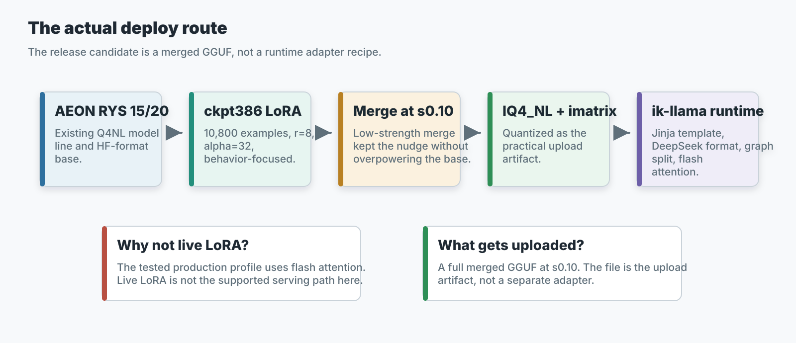
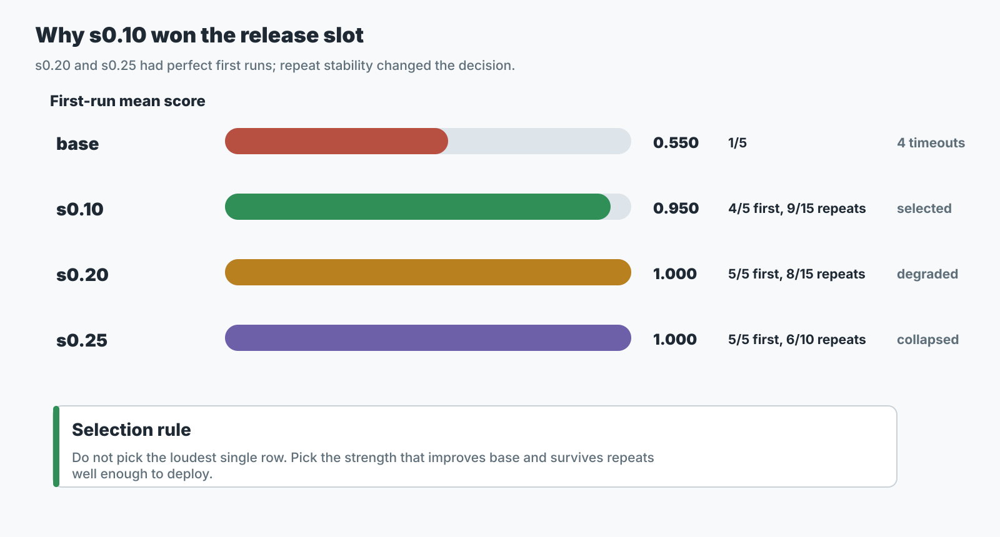
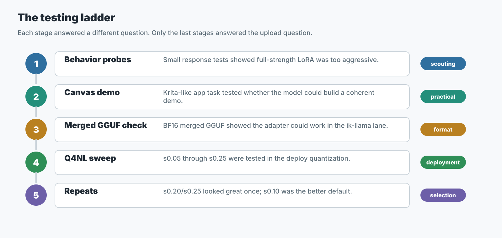

Claimed
The released RYS IQ4_NL artifact stayed close to the RYS BF16 source on the mixed probe snapshot: 0.7299 to 0.7244, or about -0.75% relative.
Technical release page
A public, evidence-first explanation of the AEON RYS 15/20 IQ4_NL release, the SignalLatch behavior fine-tune, the custom ik-llama runtime path, and the tradeoffs behind the current materialized RYS artifact.
This is a Qwen3.6-27B AEON-derived model line built around a specific RYS branch: duplicate the source layer window 15..19 and insert that copy after source layer 19. The resulting logical stack has 69 layers instead of the original 64.
The non-finetuned release is the practical base: an AEON RYS 15/20 model exported to a custom ik-llama-compatible IQ4_NL GGUF. SignalLatch is the behavior-finetuned release: checkpoint-386 LoRA merged into that RYS base at strength 0.10, then exported as the same practical GGUF deployment target.
The main project claim is narrow: in our tested custom runtime path, this RYS branch made the Q4_NL deployment much more resistant to reasoning/coding degradation than earlier non-RYS quant attempts, and SignalLatch improved practical coding-agent behavior on top of that base.

The released RYS IQ4_NL artifact stayed close to the RYS BF16 source on the mixed probe snapshot: 0.7299 to 0.7244, or about -0.75% relative.
SignalLatch is trained around a Review -> Align -> Latch -> Repair -> Confirm loop for coding agents: scoped context review, goal alignment, waiting for concrete tool signals, targeted repair, and focused validation.
This is not a stock llama.cpp drop, not a general leaderboard claim, and not proof that every RYS window helps every model.
This is not memory-optimal RYS. The current public GGUF is materialized RYS, not a runtime-aliased representation.
Use the custom AEON ik-llama fork. The GGUFs in this release line are intended for that runtime path, especially for graph split, Qwen3.6/Qwen3.5 hybrid handling, Jinja chat formatting, and DeepSeek-style reasoning extraction.
github.com/noonr48/qwen36-aeon-ik-llama
./build/bin/llama-server \
-m /path/to/Qwen3.6-27B-AEON-RYS-SignalLatch-ckpt386-s010-IQ4_NL.gguf \
-c 65536 \
-ngl 999 \
-np 1 \
-fa on \
-sm graph \
--temp 0.7 \
--jinja \
--reasoning-format deepseek \
--reasoning-budget 0 \
-cram 0 \
--ctx-checkpoints 0For long-context use, increase context as your system allows. The default KV type is f16; FP16/default KV has been tested to about 160k context without showing the earlier failure pattern.
# Long-context shape
-c 131072
# Conservative validation shape used for the canvas comparison
-c 131072 -ctk f32 -ctv f32Practical single-GPU deployment: the SignalLatch Q4_NL release is small enough for practical use on a single RTX 3090 / 24 GB-class card. In an observed reference profile, roughly 160k context with default/FP16 KV fit at about 20.3 GiB total VRAM. Treat this as a deployment reference point, not a guaranteed memory benchmark.
--ctx-checkpoints 0?This flag keeps recurrent context checkpointing disabled explicitly. The current fork also guards against unstable recurrent checkpoints under graph split, but the public command keeps the tested no-checkpoint runtime profile visible.
It was a conservative validation setting to isolate model/task behavior from KV precision. It should not be read as “FP16 KV is bad.” For normal practical use, start with default/FP16 KV and adjust based on your memory and quality needs.
The model cards carry the compact tables. This page collects the readout in one place so the release does not depend on ad hoc author replies.
The following table describes the non-finetuned AEON RYS 15/20 base artifact only. It is not a SignalLatch fine-tune score.
| Probe | RYS BF16 | Released RYS IQ4_NL |
|---|---|---|
| mixed 4-probe mean | 0.7299 | 0.7244 |
| math_16 | 0.8421 | 0.7897 |
| eq_16 | 0.7123 | 0.7111 |
| math_4 | 0.4851 | 0.5170 |
| gsm8k_5 | 0.8800 | 0.8800 |
Snapshot change: -0.0055 absolute, about -0.75% relative. This is not a broad benchmark suite; it is a release sanity snapshot for the tested deployment path.
The fine-tune claim comes from the merged ckpt386 Q4_NL practical coding-agent matrix, not from the base BF16-to-Q4_NL compression table above.
| Comparison | Strict pass | Mean | Timeout-like | Scope |
|---|---|---|---|---|
| Previous AEON RYS Q4_NL | 1/5 | 0.550 | 4 | first deploy-format run |
SignalLatch ckpt386 s0.10 IQ4_NL | 4/5 | 0.950 | 0 | first deploy-format run |
SignalLatch ckpt386 s0.10 repeat stability | 9/15 | 0.842 | n/a | three runs |
SignalLatch ckpt386 s0.10 crash-adjusted | 9/14 | 0.884 | n/a | excludes one invalid server-crash row |
For the complete fine-tune method, strength sweep, task rows, and caveats, read the SignalLatch fine-tune record.
This canvas comparison is not evidence that SignalLatch beats Unsloth IQ4_NL. SignalLatch IQ4_NL and Unsloth IQ4_NL both completed cleanly with verifier 1.0 and rc=0; the useful SignalLatch read is that it completed cleanly where the non-finetuned AEON RYS base needed a retry.
| Run | Result | Read |
|---|---|---|
| SignalLatch IQ4_NL | rc=0, verifier 1.0 | Clean completion on the isolated canvas app task. |
| AEON RYS IQ4_NL attempt 1 | rc=1, verifier 0.0417 | Invalid tool/diff failure before usable files. |
| AEON RYS IQ4_NL retry 1 | rc=0, verifier 1.0 | Clean retry, showing the base can complete the task but was less reliable in the first attempt. |
| unsloth/Qwen3.6-27B-GGUF IQ4_NL | rc=0, verifier 1.0 | Clean external comparison pass. |
| unsloth/Qwen3.6-27B-GGUF Q8_0 | rc=124, verifier 1.0 | Files passed verification but the agent timed out during final wrap-up. |


The current release uses materialized RYS. The copied 15,20 window is exported as ordinary GGUF tensors, so output layers 20..24 have their own copied tensors from source layers 15..19.
This keeps the HF checkpoint, GGUF conversion, quantization, and downstream fine-tune workflow explicit and stable. It also means the copied weights are loaded like normal weights.
Known optimization: a procedural or runtime-aliased RYS implementation could reuse source-layer weight buffers and reduce duplicate model-weight memory. That is future runtime work, not the current tested release.
The copied window is about 0.994 GiB, around 6.45% of the GGUF tensor bytes.
Runtime aliasing would not remove the extra compute or KV-cache cost from the five additional logical layers. At 131072 context, those five layers add about 2.5 GiB FP16 KV or 5.0 GiB FP32 KV.
The current artifact remains materialized because that is the version tested and released.
Several candidate windows were tested. The public release centered on 15,20 because it held up as the practical IQ4_NL release target.
The fork added the Qwen3.6/Qwen3.5 hybrid handling, graph-split serving fixes, Jinja and DeepSeek reasoning-format support, and runtime guardrails needed for this line.
The project target is the compact IQ4_NL GGUF, not the largest possible BF16 artifact. The fine-tuned BF16 GGUF exists as a source-quality artifact for inspection, conversion, and downstream work.
The selected fine-tune is checkpoint 386 at merge strength 0.10, chosen because repeated practical checks favored its stability over stronger but less reproducible strengths.
Qwen3.6-27B-AEON-RYS-SignalLatch-ckpt386-s010-IQ4_NL.gguf
Use this when you want the behavior-finetuned coding-agent profile.
Qwen3.6-27B-AEON-RYS-MaxThinkCoder-IQ4_NL-ik-llama-custom-mixed.gguf
Use this when you want the base RYS Q4_NL deployment without SignalLatch behavior tuning.
Qwen3.6-27B-AEON-RYS-SignalLatch-ckpt386-s010-BF16.gguf
Use this source-quality fine-tuned GGUF for exploration, inspection, conversion, training, and downstream work. It is not the normal inference target.
No. This release line requires the custom AEON ik-llama fork built for this RYS model. Stock llama.cpp and default upstream ik-llama are not the supported runtime path. The custom fork includes the model-specific RYS/Qwen3.6 handling, graph-split work, Jinja/DeepSeek formatting support, and speed refinements used for the tested release.
No. It improved practical coding-agent reliability in the tested sweep, but variance remains. The claim is practical and bounded.
For broader RYS research context, see David Noel Ng's article LLM Neuroanatomy II. This page documents this release line specifically.